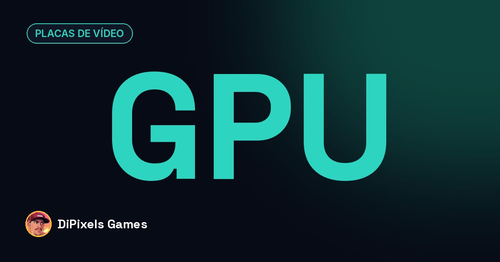

Como escolher placa de vídeo em 2026 sem gastar errado

Placa de vídeo é a peça mais cara do PC gamer e a mais fácil de errar. Gente compra placa forte demais pra um monitor 1080p de 60 Hz, ou fraca demais e se arrepende em seis meses. Este guia é o roteiro que eu sigo antes de recomendar qualquer modelo.
1. Comece pelo monitor, não pela placa
A pergunta certa não é "qual a melhor placa?", e sim "em que resolução e taxa de atualização eu jogo?"
- 1080p (Full HD): a faixa de entrada já roda bem a maioria dos jogos. Aqui entram placas como a RTX 5060 e a RX 9060 XT.
- 1440p (QHD): é o ponto ideal pra muita gente hoje. Pede uma intermediária forte, como a RTX 5070, a RX 9070 ou a RX 9070 XT.
- 4K: território das topo de linha, como a RTX 5070 Ti e acima. Só faz sentido com um monitor 4K de verdade.
Se você joga competitivo num monitor de 144 Hz ou 240 Hz, conte com uma placa um degrau acima da sua resolução. Taxa de quadros alta cobra caro.
2. Memória de vídeo (VRAM) importa mais do que parece
Jogos novos estão cada vez mais pesados em textura. Uma regra prática pra 2026:
- 8 GB: funciona em 1080p, mas já obriga a baixar textura em vários lançamentos.
- 12 GB: o mínimo confortável pra 1440p.
- 16 GB ou mais: pra quem quer textura no máximo, 4K ou segurança por mais anos.
Na dúvida entre duas placas parecidas, a que tem mais VRAM costuma envelhecer melhor.
3. NVIDIA ou AMD?
- NVIDIA (RTX): o DLSS tem a tecnologia de reconstrução de imagem mais madura, o desempenho em ray tracing é melhor e o suporte em programas de edição e IA é forte. Se você também edita vídeo ou faz live, pesa a favor.
- AMD (Radeon): costuma entregar mais desempenho bruto e mais VRAM pelo mesmo preço. O FSR evoluiu bastante. É ótima escolha pra quem foca só em jogo.
Não tem resposta única. Compare as duas no seu orçamento e veja qual entrega mais nos jogos que você joga. Jogos como o Control Resonant e o 007 First Light são boas referências de lançamento pesado pra conferir nos testes.
4. Não esqueça da fonte e do gabinete
- Potência da fonte: o fabricante indica a fonte recomendada. Respeite, e prefira fonte de marca confiável com certificação 80 Plus.
- Conector de energia: algumas placas usam o conector de 16 pinos. Veja se sua fonte tem o cabo ou se a placa vem com adaptador.
- Tamanho: placas mais fortes são compridas e grossas. Meça o espaço do gabinete.
5. Processador não pode segurar a placa
Uma placa nova num processador muito antigo vai render menos do que deveria, principalmente em 1080p e em jogos competitivos. Se o seu processador tem muitos anos, considere atualizar os dois juntos, ou escolher uma placa um degrau abaixo e investir a diferença no processador.
6. Quando comprar
Preço de placa de vídeo no Brasil oscila muito. O mesmo modelo pode variar centenas de reais em poucos dias, e cupom de loja faz muita diferença. Defina o modelo e o seu preço-alvo antes, e só compre quando bater.